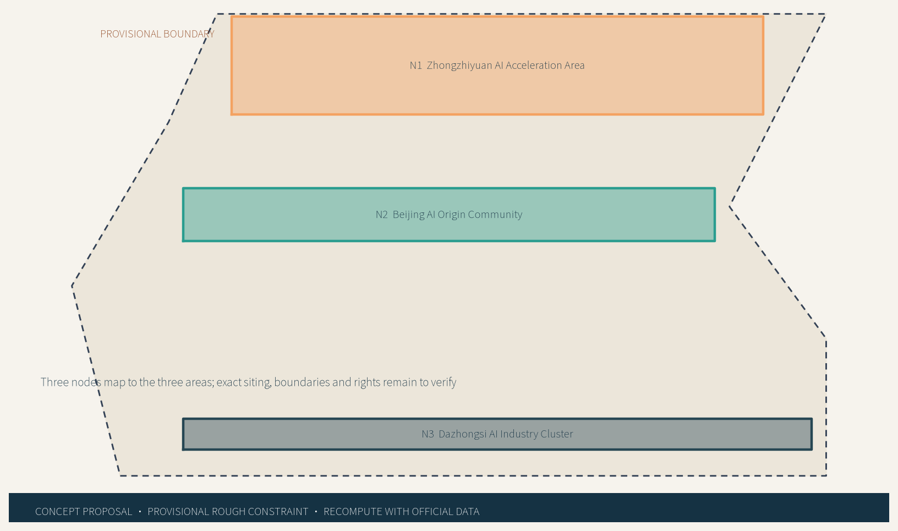
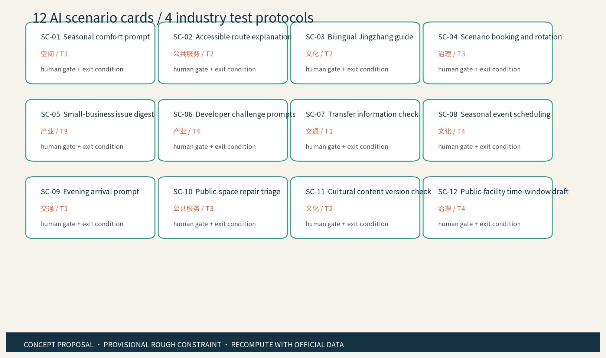

Seasonal Civic Calibration Belt | Evidence Workspace
Bilingual evidence workspace for a provisional design model; all spatial moves are concept suggestions.
Local four-gate result is recorded separately
Overall map

Core metrics
Values are recomputed from submitted geometry; recalculate after official geometry is released.
Three-level scope
Coordinated research -> overall design -> three key areas. Three Areas and Two Wings form a conceptual loop through resources, scenarios and public experience.
agent.1agent.2agent.3Key areas

Land-use zones

Slow mobility / Blue-green public space

AI scenarios

Twelve scenario cards cover industry, space, transport, public services, culture and governance; each retains a human gate, non-AI alternative and exit condition.
Task coverage
| agent | Evidence |
|---|---|
| 1 | brand / structure / three zones-two wings |
| 2 | 7 public cases / 8 factors / ecosystem map |
| 3 | 12 cards / 4 tests / 6 personas |
| 4-6 | public rooms / culture / annual operation |
Buildings
Retain first, reversible adaptation second; specific retain/renovate/demolish decisions remain to verify; no height, intensity, FAR or engineering conclusions.
Renewal projects

Self-check state
Records local deterministic, spatial, visual and professional evidence gates only; it is not an external review score.
formal packageofflinehuman reviewSources
Sources include the announcement, taskbook, public standards, Jingzhang cultural references and seven institutional case pages; URL, reuse terms, use and limits are in sources.json.
Assumptions
Provisional boundary, controls, heritage, rights, operations and AI baselines are marked in assumptions.json.